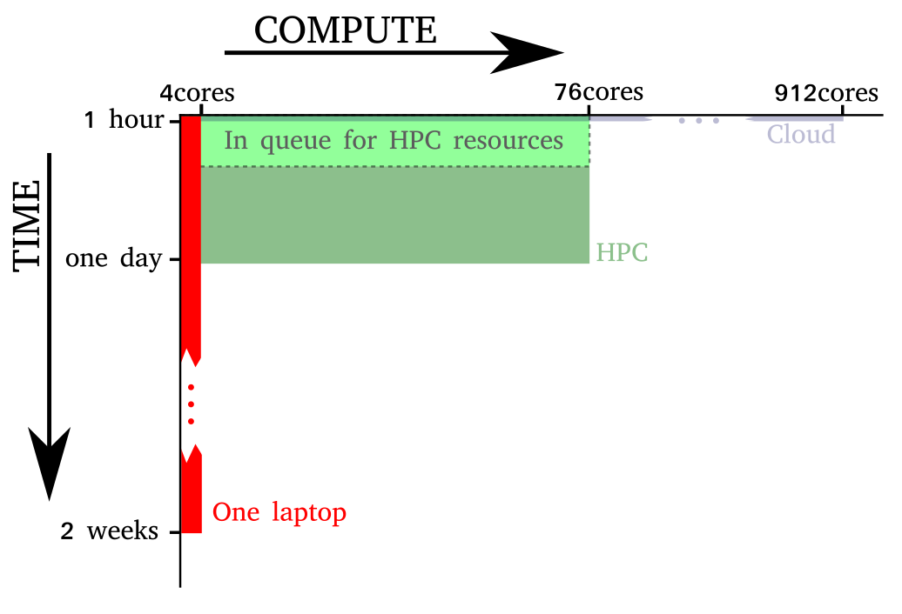
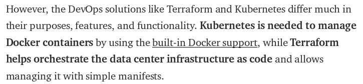
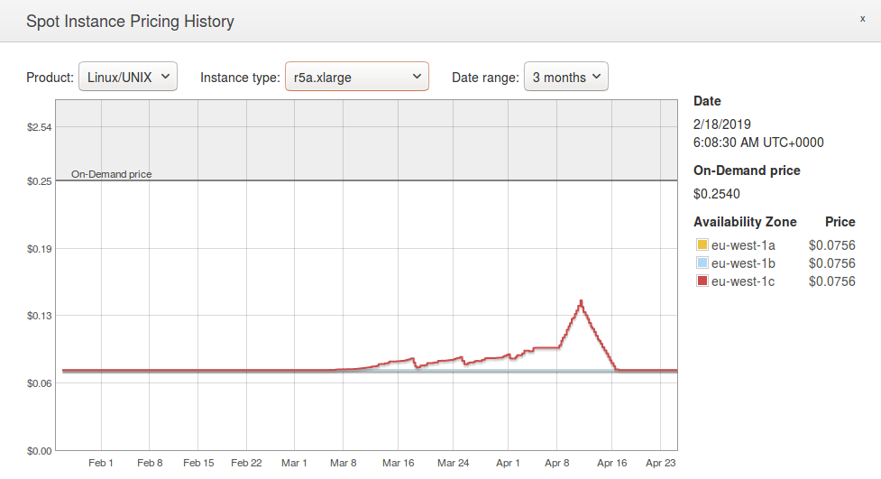

ML and Cloud Computing
Dr. Mike Smith, University of Sheffield
michaeltsmith.org.uk
m.t.smith@sheffield.ac.uk
@mikethomassmith

Local vs Parallel
It's not always worth parallelising your application!
Human time is worth more than compute, so if you can do something else and be patient it might be best not to bother with rewriting it to be parallel.
Local vs Parallel
Why stay local?
- Need to redesign algorithm (but most 'ML' will already have distributed implementations)
- Security and privacy (where are you sending the data? Is it private?)
- Typically such environments are less reliable and less predictable.
- Far more difficult to debug.
- Managing the pipeline.
- Shifting data to/from the servers might be a considerable bottleneck.
(privacy detour)
- If your storing or processing a European citizen's 'personally identifiable information' on a server outside the EU there's a chance you're breaching data protection laws.
- It might be that it's ok - it depends on the definition of who is the 'data controller' and 'storing'.
- However, to avoid uncertainty, you might as well use a cloud computer within the EU (this will, typically, be slightly more expensive).
- The relevant regulations are already in UK law, so this will still apply if the UK leaves, probably.
I'm not a lawyer, this is my best understanding of the situation!
HPC vs the Cloud
Until now we've used the university's own HPC system.
HPC - Often provided for free by institution, highly interconnected nodes - vital for many problems.
Cloud - No queuing, quick to set up, often only option outside of universities. Well suited for embarrassingly parallel problems. Remains up-to-date. Almost all platforms and features supported. Appropriate if hosting a front-end server.
The Cloud and Price
- Typically you rent (virtual) hardware while you need it.
- This can lead to cost savings (also see spot pricing) - as one doesn't need to maintain or buy expensive compute resources which will quickly devalue.
- Also very large clusters can be created briefly.
The Cloud and Tools
Often HPC batch jobs require somewhat hacky scripts to collect together the results.
On the cloud, tools like dask let you run the whole operation from a single jupyter notebook as if the whole computation was local.
The Cloud and Problems
Problems include: accidental spend, security issues, unable to solve some types of problem, limited support.

Recap of some terms...
MapReduce

MapReduce is both a model and a particular implementation of a method for running calculations on a large set of data, where one can divide the problem into a series of mappings, shufflings and combining operations.
MapReduce
MapReduce consists of two stages:
- A simple operation is carried out in parallel on all elements of a dataset (typically depends on the problem being embarrassingly parallel). This is the map stage.
- The result of these simple operations are shuffled to be in the right locations and then are used to generate a result (the reduce stage). The hadoop implementation also includes a combiner (which sort of does partial reduction).
MapReduce
A simple example is performing a word frequency count. The map stage simply creates a set of tuples, pairing each word with a 1. The combiner and reducer stages then add these up. Because this is distributed, this can scale.
Apache Spark

Apache SPARK is a distributed cluster computing framework.
- Originally developed at University of California, Berkeley.
- Avoids many limitations of the MapReduce framework.
- Particularly useful for iterative algorithms (typical of ML gradient descent for example).
- Based on read-only distributed objects called resilient distributed datasets (RDDs).
kubernetes

- Organises distributed containers (automated application deployment).
- Means we don't have to connect to the nodes and faff with setting up stuff. This is all done for us.
- Typically uses docker to manage this.
(for interested students: lecture using kubernetes on google cloud)
Service Models
There are different 'layers' available to the customer on the cloud, the trade off is typically complexity vs flexibility...
Infrastructure as a Service, Platform as a Service, Software as a Service...
Infrastructure as a Service
IaaS
The AWS EC2 system of instances is an example of Infrastructure as a Service.
Typically a hypervisor (e.g. Xen) runs the virtual machines, storage is allocated, etc. You then have to install and run your own software on top of this.
Platform as a Service
PaaS
Fairly similar to IaaS, typically you provide software, but the service then starts up virtual machines, allocates storage, runs databases, etc that your software can use - without you needing to manage this.
Software as a Service
(SaaS)
You'll be familiar with things like google docs, etc - the software is provided as a cloud service.
Infrastructure as Code
(IaC)
- Clicking lots of buttons to set up servers and software is slow and prone to mistakes, and hard to automate or repeat.
- Instead we can define the computers, libraries, systems and software using code.
Terraform
Terraform is an IaC tool.
Quoting wikipedia: It enables users to define and provision a datacenter infrastructure using a high-level configuration language known as Hashicorp Configuration Language (HCL),
(demo)
Terraform/Kubernetes

hadoop

hadoop is a collection of tools. The main one we'll be interested in is its file system (the hadoop distributed file system, HDFS).
The Hadoop system also includes YARN (scheduler) and a MapReduce implementation.
docker

docker allows us to put all the software, libraries and configuration files that you need to run an application into a container.
- Mainly for linux.
- Sort of replaces VMs - but in a lighter way, and makes it easier to move data between them.
dask

dask is a library for performing parallel computation for python. I've used it mainly for embarrassingly parallel problems. It makes distributing cross-validation or grid-searches for example very easy.
(show example)
AWS
Note: For the practical we'll be using Amazon Web Services. However the steps are similar in google cloud etc.
AWS
Huge range of tools (link)
AWS: Instances
The computation on AWS is centred around virtual machines called instances. There are a huge range of configurations to select from now. Typically they fall into a few categories...
AWS: Instances
- General purpose. these range in size considerably. Worth noting are the T2/T3 instances. These are cheap burstable instances. You get so much compute per hour. For example the t3.nano gives you 6 minutes each hour. Ideal for maybe a low-traffic web server?
- (cost as low as $0.0016/hour = £1.09/month, with VAT. There are also costs of moving data and storage though!)
AWS: Instances
- Compute optimised. Lots of CPU (largest instance c5.18xlarge with 72 virtual CPUs).
AWS: Instances
- Memory optimised. Many ML calculations require lots of memory (e.g. Gaussian processes). The r5a.24xlarge provides 768Gb of memory.
- On-demand price about $5/hour.
AWS: Instances
- Accelerated computing. Instances with lots of GPUs and memory.
Instances also come with different bandwidths - may be relevant if setting up a cluster for example.
AWS: Storage
There are many types of storage provided by AWS. They trade off price, reliability and speed...
AWS: Storage
- Amazon Glacier: Low cost, very slow access (hours)
AWS: Storage
- Elastic Block Store: This is the type of storage you need in your EC2 instance.
- slowest/cheapest: sc1 (simple HDD)
- still cheap: st1 (throughput-optimised HDD)
- solid-state: gp2 (general purpose SSD)
- fast/expensive: io1
AWS: Storage
- Amazon s3 (a simple storage service). Basic storage unit is a "bucket". Easy way of sharing data too (example openaq data). Looks a bit like a file system. Has API and CLI as does the rest of AWS.
AWS: Images
When creating an instance you get to select the operating system and software installed. Or can use a custom image (which might contain data and specific configuration). link

AWS: Images
To reduce costs one could use spot pricing - this uses spare compute and a form of bidding. If the price goes above a threshold you set the instance is terminated.
AWS: Lambda
AWS Lambda allows you to put code on the cloud, without having to deal with running a server. The code is triggered by a variety of events, and can perform basic tasks in response. Typically stateless.
(show demo).
reference for example.AWS: EMR
AWS Elastic Map Reduce is a system for configuring (potentially autoscaling) clusters of computers. We'll cover this more in the practical so I won't mention it too much here.
Summary...
Summary
Lots of methods for using the cloud, depending on the use case.
Summary
Often (for ML) it's not worth parallelising!
Summary
Cloud Computing potentially quicker and useful if need to be providing a service.
HPC has powerful interconnects and is often free for researchers. Privacy and security maybe less of an issue using an HPC.
Summary
Example tools, methods and libraries: dask, map-reduce, spark, terraform, hadoop, docker
Service Models: IaaS/PaaS/SaaS/IaC
Summary
AWS: Instances (processing? memory? GPUs? bandwidth?), Lambda, EMR.
Summary
Finally: Technology's changing very quickly (most of the examples given are tools that are less than ten years old, need to search for the best tool for the job).